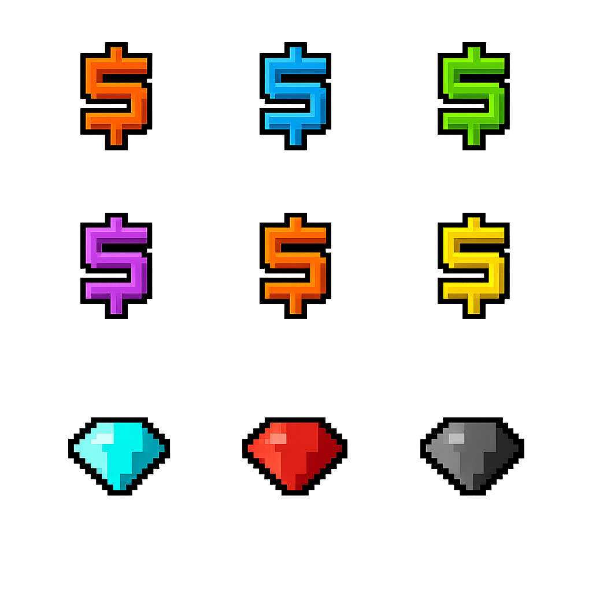

INDEPENDENT IMPACT PLAYER GUIDE
Impact RSPS Donator Ranks: Benefits and Requirements
Compare all nine ranks, see exactly what changes at each step, and match the lowest useful rank to the way you actually play.
Progression after Knight follows Spent Impax — the Impax used through the store, not simply the Impax you own.

QUICK ANSWER
How Impact Donator ranks work
Impact has nine Donator ranks. Knight starts with a Membership bond; Baron through Emperor unlock when the account reaches their required Spent Impax total. Impax can also be bought for in-game GP through the Trading Post, but it must be spent through the store to advance the rank. The highest rank is not automatically the right target: the sensible stopping point is the lowest rank that unlocks a benefit you will use often.
Impact uses the term Donator ranks, although players may also refer to them as Impact donor ranks.
PLANNING TOOL
Impact Donator Rank Cost Calculator
Estimate how much more Spent Impax you need for a target rank. Enter your current spent total, choose a rank, and add the price you pay per Impax.
Remember: Rank progression is based on Spent Impax, not the unspent Impax currently held on the account.
NINE-RANK LADDER
Impact Donator Rank Requirements at a Glance
The icons below follow the live rank order. Select a rank to jump to its full requirement, changes, and limitations.
SIDE-BY-SIDE VIEW
Impact Donator rank comparison
Approximate drop-rate values are marked with “~”. Prayer and PK columns show only benefits stated for that rank on the official page.
| Rank | Requirement | Gear Slots | TP Offers | Drop Rate | Prayer Benefit | PK Benefit | Standout Unlock |
|---|---|---|---|---|---|---|---|
| Knight | Membership bond | 8 | 5 | None listed | None listed | 60% spec recharge on Edgeville kill | Core Donator access |
| Baron | 500+ Spent Impax | 10 | 6 | ~5% | None listed | No PK drop buff listed | Choose Wilderness obelisk destinations |
| Paladin | 2,000+ Spent Impax | 12 | 8 | ~10% | None listed | No PK drop buff listed | Vengeance Other spell |
| Warlord | 6,000+ Spent Impax | 15 | 10 | ~15% | x1.5 slower drain outside Wilderness | +20% GP; 4 fewer bounty-crate kills | First listed PK and prayer tier |
| Governor | 12,500+ Spent Impax | 18 | 12 | ~20% | x2 slower drain | +40% GP; 8 fewer bounty-crate kills | 100% special recharge; DI anvil |
| Duke | 25,000+ Spent Impax | 21 | 14 | ~30% | x2.5 slower drain | +60% GP; 12 fewer bounty-crate kills | Free Nex entry; extra untradeable protected |
| Prince | 50,000+ Spent Impax | 24 | 20 | ~35% | x3 slower drain | +80% GP; 16 fewer bounty-crate kills | Maid helper pet |
| King | 100,000+ Spent Impax | 27 | 20 | ~40% | x4 slower drain | +100% GP; 16 fewer bounty-crate kills | Butler upgrade |
| Emperor | 200,000+ Spent Impax | 30 | 20 | ~45% | x5 slower drain | +125% GP; 16 fewer bounty-crate kills | Demon Butler; Looting Bag anywhere |
“TP Offers” means simultaneous Trading Post offers. The table separates recurring benefits from rank-gated boss access and separately paid private instances, covered below.
WHAT EACH UPGRADE CHANGES
Detailed Impact rank benefits
Editorial note: “Best suited for” is practical guidance from this independent guide, not an official Impact recommendation.
RANK 1 OF 9
Knight
Membership bond
The entry rank establishes the core Donator convenience layer and opens the first two Donator Monster Island bosses.
Best suited for: New or casual players testing whether Donator shortcuts, island access, and extra setup capacity fit their routine.
Full Knight specifications
- Drop-rate, prayer-drain, blacklist, and PK drop buffs are not listed at this rank.
- Donator shortcuts include Ctrl + B for the bank and Ctrl + T for the Trading Post.
- Crazy Archaeologist and Chaos Elemental require at least Knight; private instances still have separate fees.
RANK 2 OF 9
Baron
500+ Spent Impax
Baron adds the first approximate drop-rate benefit and a Wilderness travel control.
Best suited for: Early progression players who use Wilderness obelisks or want a modest increase in setup and market capacity.
Full Baron specifications
- 10 Quick Gear slots and 6 Trading Post offers.
- Special Restore Altar remains at a 60-second cooldown.
- No prayer-drain or PK drop buff is listed.
- Chaos Fanatic becomes available on Donator Monster Island; a private instance costs extra.
RANK 3 OF 9
Paladin
2,000+ Spent Impax
Paladin improves the recurring capacities and unlocks a specific support spell.
Best suited for: Players who regularly manage several gear presets, trade more actively, or have a real use for Vengeance Other.
Full Paladin specifications
- 12 Quick Gear slots and 8 Trading Post offers.
- No prayer-drain or PK drop buff is listed.
- Scorpia becomes available on Donator Monster Island; the 100M GP private instance fee is separate.
RANK 4 OF 9
Warlord
6,000+ Spent Impax
Warlord is the first rank with listed prayer-drain, PK drop, and bounty-crate benefits.
Best suited for: Active PKers or PvM players who will repeatedly use the prayer and special-attack improvements.
Full Warlord specifications and limits
- Prayer drain is slowed by x1.5 outside the Wilderness.
- Calvar'ion and Spindel become available on Donator Monster Island.
- Each private instance for those bosses is listed at 1B GP and lasts two days.
RANK 5 OF 9
Governor
12,500+ Spent Impax
Governor reaches full listed special recharge and unlocks the final current Donator Monster Island boss tier.
Best suited for: Dedicated multi-activity players, especially those targeting Artio access or Smithing at the Donator Island anvil.
Full Governor specifications
- Special Restore Altar remains at a 30-second cooldown.
- The Donator Island anvil is available from Governor onward.
- Artio becomes available; its private instance is listed at 1B GP for two days.
RANK 6 OF 9
Duke
25,000+ Spent Impax
Duke shifts toward specialized account tools: free Nex entry, extra death protection, and an item claim.
Best suited for: Established PvM players who run Nex or value the extra protected untradeable on death.
Full Duke specifications and unique features
- 100% special recharge and blacklist capacity remain at 8.
- Speak with Phileas the Guide to receive a Tokhaar-Kal.
- Nex entry is free instead of requiring 30 Ancient essence.
- Protect 1 additional untradeable item on death.
RANK 7 OF 9
Prince
50,000+ Spent Impax
Prince makes the largest Trading Post jump and begins the helper-pet progression with the Maid.
Best suited for: High-volume traders or long-term players who want automatic coin pickup and broader recurring benefits.
Full Prince specifications
- Instant yell, 100% special recharge, instant Special Restore, and blacklist capacity of 8 continue.
- The Maid automatically picks up coins; the wiki does not list teleporting or unnoting for this pet.
RANK 8 OF 9
King
100,000+ Spent Impax
King upgrades the Maid into a much broader utility pet and continues the combat progression.
Best suited for: Slayer-focused or supply-heavy players who can use Butler pickup, task teleport, and permitted unnoting frequently.
Full King specifications and Butler limits
- Trading Post capacity stays at 20; bounty reduction stays at 16; blacklist stays at 8.
- Instant yell, full special recharge, and instant altar restore continue.
- Butler picks up coins, Blood Money, Seasonal Pearls, and Crystal Shards, and can teleport to the Slayer task.
- Butler unnoting does not work in the Wilderness, Corporeal Lair, Moons of Peril, DT2 boss areas, Nightmare, or any raid.
RANK 9 OF 9
Emperor
200,000+ Spent Impax
Emperor finishes the current ladder with the highest setup, drop-rate, prayer, and PK values plus two account tools.
Best suited for: Completionists who will actively use the Demon Butler or a Looting Bag outside the Wilderness—not players chasing rank count alone.
Full Emperor specifications and Demon Butler limits
- 20 Trading Post offers, instant yell, 100% special recharge, instant Special Restore, 16 fewer bounty-crate kills, and blacklist capacity of 8.
- Phileas supplies the item that upgrades a Butler into a Demon Butler.
- Demon Butler adds common and uncommon monster drops plus an optional clue-scroll pickup toggle to the Butler pickup list.
- Task teleport remains available. Unnoting has the same Wilderness, Corporeal Lair, Moons of Peril, DT2 boss, Nightmare, and raid exclusions.
HOW BENEFITS AFFECT PLAY
Impact rank benefits by category
Everyday convenience
Every Donator can open the bank with Ctrl + B and the Trading Post with Ctrl + T. These save routine travel but do not replace rank-gated access.
Quick Gear management
Capacity rises from 8 Knight slots to 30 Emperor slots. The practical value depends on how many distinct PvP, PvM, raid, Slayer, and skilling setups you actually maintain.
Trading Post capacity
Offers climb from 5 to 20. Prince reaches the 20-offer cap shown on the current page, so King and Emperor do not add more market listings.
Donator Island
The hub has bank-adjacent Fishing, Cooking, and Woodcutting; a prayer altar; a spirit tree; and Monster Island portals. The Smithing anvil specifically requires Governor+.
Donator Monster Island
Seven Wilderness bosses can be fought in a safe environment. Each boss has its own minimum rank, and meeting it is required for both the shared area and a paid private instance.
Boss access and fees
A rank grants eligibility, not a prepaid instance. Current private-instance prices are 100M GP or 1B GP and the wiki says each instance lasts two days.
Drop-rate progression
The listed increase begins at approximately 5% for Baron and reaches approximately 45% for Emperor. The approximation symbol matters: these are not exact drop guarantees.
PK-related benefits
Warlord starts the listed PK drop GP buff and Edgeville bounty-crate reduction. The GP buff grows through Emperor; the crate reduction stops increasing after Prince.
Prayer and special attacks
Warlord begins slower prayer drain, while Governor reaches 100% special recharge. Duke is the first rank with instant Special Restore Altar access.
Helper pets and account tools
Prince, King, and Emperor form the Maid-to-Demon-Butler chain. Duke adds Nex/death tools; Emperor adds broader Looting Bag use. Restrictions still apply to pet unnoting.
DONATOR MONSTER ISLAND
Boss rank requirements and private instance fees
Rank eligibility and the instance price are separate. The same minimum rank applies whether you enter the shared safe zone or pay for a private instance.
| Boss | Shared-Zone Minimum | Private-Instance Minimum | Instance Fee | Listed Duration |
|---|---|---|---|---|
| Crazy Archaeologist | Knight+ | Knight+ | 100M GP | 2 days |
| Chaos Elemental | Knight+ | Knight+ | 100M GP | 2 days |
| Chaos Fanatic | Baron+ | Baron+ | 100M GP | 2 days |
| Scorpia | Paladin+ | Paladin+ | 100M GP | 2 days |
| Calvar'ion | Warlord+ | Warlord+ | 1B GP | 2 days |
| Spindel | Warlord+ | Warlord+ | 1B GP | 2 days |
| Artio | Governor+ | Governor+ | 1B GP | 2 days |
HIGH-RANK QUALITY OF LIFE
Maid, Butler, and Demon Butler compared
The helper pets are a progression chain obtained through Phileas the Guide, not three unrelated unlocks.
PRINCE
Maid
Unlock: Receive the Maid after speaking with Phileas.
- Automatically picks up coins.
- No Slayer teleport or unnoting function is listed for Maid.
KING
Butler
Unlock: Receive Upgrade Maid from Phileas and use it to upgrade the Maid.
- Picks up coins, Blood Money, Seasonal Pearls, and Crystal Shards.
- Right-click teleport to the current Slayer task.
- Unnotes items outside the listed excluded areas.
EMPEROR
Demon Butler
Unlock: Receive Upgrade Butler from Phileas and use it on the Butler.
- Adds common and uncommon monster drops.
- Optional clue-scroll pickup toggle via “Talk-to.”
- Keeps Butler's task teleport and permitted unnoting.
PLAYER-PROFILE MATCHING
Which Impact Donator rank fits your playstyle?
These are conservative starting targets based on concrete unlocks. They are not claims about financial value, and moving higher only makes sense when the next benefit solves a repeated need.
New or casual player
Natural first target: Knight. Test the shortcuts, Donator Island, 8 gear slots, 5 offers, and entry boss access. Before upgrading, check whether one named Baron or Paladin benefit would change your weekly play.
Frequent trader
Natural first target: Paladin. Eight offers can be a meaningful early step; Prince is the first rank with the current 20-offer cap. Check your normal number of simultaneous listings before aiming higher.
PvM-focused player
Natural first target: Warlord or Governor. Choose based on the exact Monster Island boss: Warlord for Calvar'ion/Spindel, Governor for Artio. Confirm the separate 1B GP instance fee and whether shared access is enough.
PK-focused player
Natural first target: Warlord. It starts the listed PK drop GP buff and bounty-crate reduction. Check how often you play the relevant PK content before valuing later percentage increases.
Skiller
Natural first target: Knight; Governor for the anvil. Basic island skilling is already available to Donators, while the anvil specifically requires Governor+. Confirm that the island's bank proximity improves the skill you train.
Frequent gear switcher
Natural first target: Paladin or Warlord. They provide 12 or 15 slots without requiring the high-rank pet tiers. Count your saved setups first; more slots have no practical value if they stay empty.
Long-term completionist
Natural staged targets: Duke, Prince, then King/Emperor. Duke adds distinct account tools; Prince starts helper pets. Only continue to King or Emperor if the expanded pet or Looting Bag feature matters to your goals.
UPGRADE CHECK
A simple rank decision framework
- Name the exact benefit.“More perks” is not a goal; “20 Trading Post offers” or “Artio access” is.
- Estimate real use.How many times did the missing feature slow you down during the last week?
- Find the lowest rank that has it.Several systems cap before Emperor, including Trading Post offers and bounty-crate reductions.
- Check access conditions.A boss may require a rank for both shared access and private instances.
- Separate rank from running costs.Private instances have their own GP fee even after the rank is unlocked.
- Read the restrictions.Location exclusions can make a helper-pet feature irrelevant to the activity you had in mind.
- Verify live information.Check your in-game Spent Impax, the current wiki, and any payment prompt before spending.
COMMON MISREADS
Mistakes to avoid when planning a rank
Owned Impax is not Spent Impax
Holding Impax does not itself advance Baron-to-Emperor progression. The official page ties rank to the amount already spent.
Island access is not universal access
The Governor+ anvil and each Monster Island boss have their own minimum rank.
Boss access is not an included instance
The private area has a separate 100M GP or 1B GP fee even after the rank requirement is met.
Helper pets do not work everywhere
Butler and Demon Butler unnoting has explicit location exclusions, including all raids and the Wilderness.
Screenshots become stale
Old menus and shared images may show previous requirements. Use the live page and in-game interface.
Benefit count hides relevance
A lower rank with one frequently used unlock can fit better than a higher rank full of unused features.
Approximate is not guaranteed
The drop-rate figures are presented as approximate and should stay approximate in planning.
FAQ
Impact Donator-rank questions
How do Impact Donator ranks work?
Impact has nine cumulative Donator ranks. Knight is activated with a Membership bond, while Baron through Emperor are determined by the total Impax recorded as spent on the account.
What is Spent Impax?
Spent Impax is the amount of Impax the account has used through the Impact store. Rank progression is based on that spent total, not the unspent Impax currently owned.
Can Impax be obtained with in-game GP?
Yes. The official rank page says players may buy Impax with in-game GP through the Trading Post and then spend it through the in-game store.
What is the first Impact Donator rank?
Knight is the first rank and is unlocked with a Membership bond.
Which rank unlocks each helper pet?
Prince unlocks the Maid, King provides the item that upgrades the Maid to a Butler, and Emperor provides the item that upgrades the Butler to a Demon Butler. These are obtained from Phileas the Guide.
Which rank is required for Donator Monster Island bosses?
Crazy Archaeologist and Chaos Elemental require Knight; Chaos Fanatic requires Baron; Scorpia requires Paladin; Calvar'ion and Spindel require Warlord; and Artio requires Governor.
Do private boss instances cost extra GP?
Yes. The official wiki lists separate instance fees of 100M GP or 1B GP depending on the boss. Instances last two days, and the required rank applies to both shared areas and private instances.
Which rank has the most Quick Gear slots?
Emperor has the highest listed capacity at 30 Quick Gear slots.
Are drop-rate increases exact?
No. The official rank page marks the drop-rate increases as approximate, so they should not be treated as exact guarantees.
Can helper pets unnote items everywhere?
No. Butler and Demon Butler unnoting cannot be used in the Wilderness, Corporeal Lair, Moons of Peril, DT2 boss areas, Nightmare, or any raid.
Can Impact rank benefits change?
Yes. Rank thresholds, benefits, access rules, and instance fees are controlled by Impact and may change. Verify the live official wiki and in-game information before spending Impax.
Official sources, verification and disclaimer
Rank requirements and benefits may change. Verify current information using the official Impact rank page, keyboard shortcuts, and Impact game rules.
This independent guide and any linked third-party store are not affiliated with or endorsed by Impact. Review Impact's current game rules before purchasing or trading.
KEEP PLANNING
Build the account around the content you play
Continue with independent Impact progression guides, including practical routes for earning GP in game and planning Slayer.